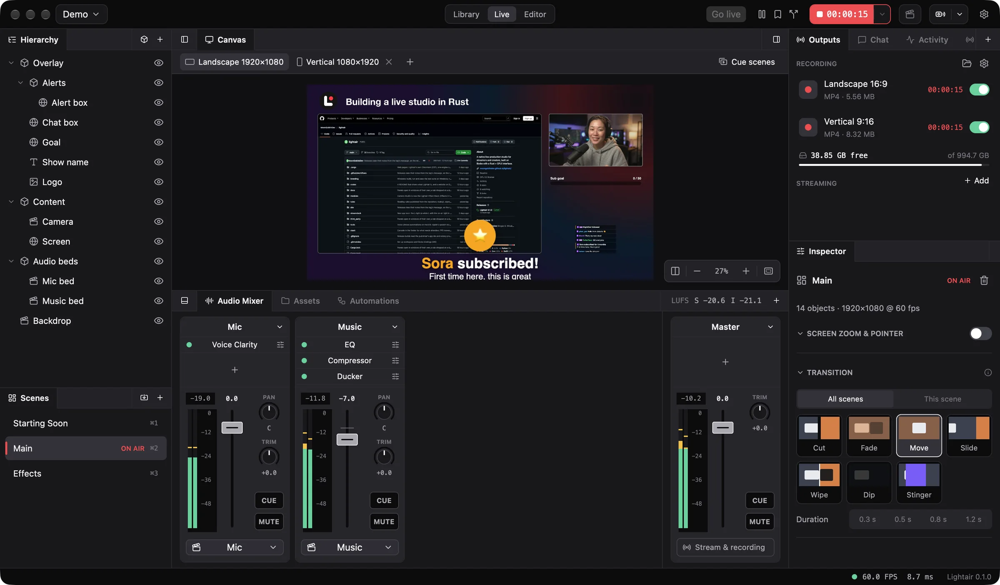
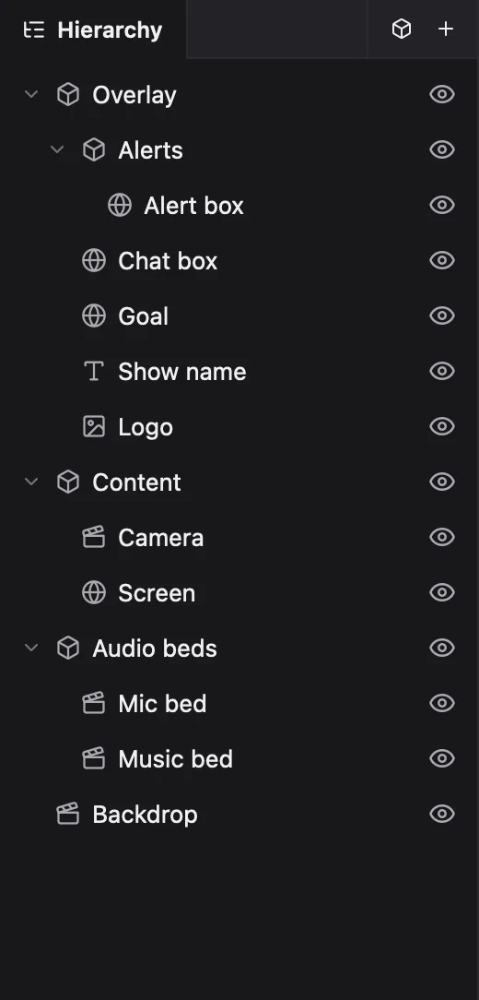

The whole show, in one app.
Lightair is a live studio for streamers. Scenes, sound, chat, alerts, effects on your face and a vertical stream beside the landscape one, on the engine inside OBS, with an interface that's quick to use.
Real output, untouched: Starting Soon moves into Main with the Move transition, so the logo and the goal glide to their new places. Chat, a sub and a tip arrive while it records.
Scenes · Move transition · WidgetsLandscape and vertical, from one show.
Every scene has a layout for each format, sharing the same camera, widgets and sound. Edit them side by side, then stream or record each one where it belongs. These two clips are one recording.
Look like you, on a good day.
Face-aware effects run on the camera itself: skin, makeup, relighting, background and colour, tracked to your face in real time on Core ML or DirectML. Drag across to compare.
Everything on one screen, nothing in dialogs.
Edit on the canvas, adjust in the Inspector beside it, hear it in a real mixer. Every panel docks, stacks or opens in a window of its own.

1 2 3 4 5 6- 1HierarchyLayers in groups, groups in groups, like a design tool.
- 2FormatsLandscape and vertical tabs, or both side by side.
- 3CanvasMove, resize, rotate and crop right on the picture.
- 4OutputsHere both formats record at once; stream to many places too.
- 5MixerStrips with effects, meters, sends and loudness.
- 6TransitionsCut, Fade, Move, Slide, Wipe, Dip and your own stinger.

Groups inside groups.
Put an overlay in one group and alerts inside it; hide, lock or move a whole group at once. Duplicate a layer as a prefab and every copy follows the original.

A mixer, not a list of volume sliders.
Voice Clarity cleans a mic in one switch. EQ, compressor, ducking and VST3 plugins per strip, sends for headphones and a VOD track, and EBU R128 loudness on what the audience hears.
The plugins you'd install, already there.
One chat, every platform
Twitch, YouTube, Kick, TikTok, Bilibili, Douyu, Huya, Chzzk, SOOP, Niconico, TwitCasting and Showroom, with moderation.
Alerts and widgets
Alert box, chat box, goal, event list, poll, prediction, wheel, credits, emote wall and more, served by Lightair. StreamElements widgets import.
Tips, nothing to host
Streamlabs, StreamElements and Ko-fi, straight into alerts and the Activity feed.
Official sign-in
YouTube, Twitch, Kick and X: set your title and category from Lightair.
Multistream
RTMP(S), SRT, RIST and WHIP to many places at once, sharing encoders, after a check of keys, upload and mic levels.
Record, clip, replay
MP4, MKV or MOV with pause, chapters and split. Clip the last minute and replay it on air.
Automations
Commands, timers and events that chat, switch scenes, play sounds, speak and set your lights. Streamer.bot actions import.
Bring your OBS setup
Scene collections import, and OBS's source, filter and output plugins load as they are.
Updates itself
Signed updates, never while you're live. Notarized on macOS.
Drive it from anything.
A remote API for scripts, decks and agents, that also speaks obs-websocket, so the tools you use with OBS keep working.
// switch to Main with the show's transition ws.send(JSON.stringify({ jsonrpc: "2.0", id: 1, method: "scene.switch", params: { scene: "Main" }, })) // and hear about everything that happens { method: "events.subscribe", params: { events: ["scene.program", "record.state"] } }
- JSON-RPCOver WebSocket and HTTP: scenes, layers, sound, outputs, every command.
- obs-websocket v5Stream decks and OBS tools connect as if Lightair were OBS.
- MCPAI agents can see the program and run the show.
- Stream DeckA plugin, global shortcuts, and ⌘K for every command.
Free, and yours.
Open source under GPL-3.0. You don't need OBS installed.
Windows
Windows 10 22H2 or 11, x64. Portable: unzip and run. Lightair-x.y.z-windows-x64.zip
Download for Windows